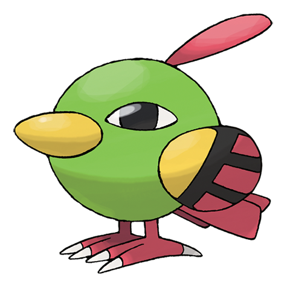

Estadisticas
Hp: 65 Ataque: 75 Defensa: 70 Ataque Especial: 95 Defensa Especial: 70
Velocidad: 95 Total: 470
Dicen que se mantiene prácticamente inmóvil y en silencio porque observa
el pasado y el futuro al mismo tiempo.
Altura: 1,5M Peso 15,0Kg Categoria: Mistico Habilidad: Sincronia, Madrugar
Tipos
Debilidades
Electrico, Hielo, Roca, Fantasma, Siniestro
Prevolucion: Natu

Primera pagina
Natu
CSS